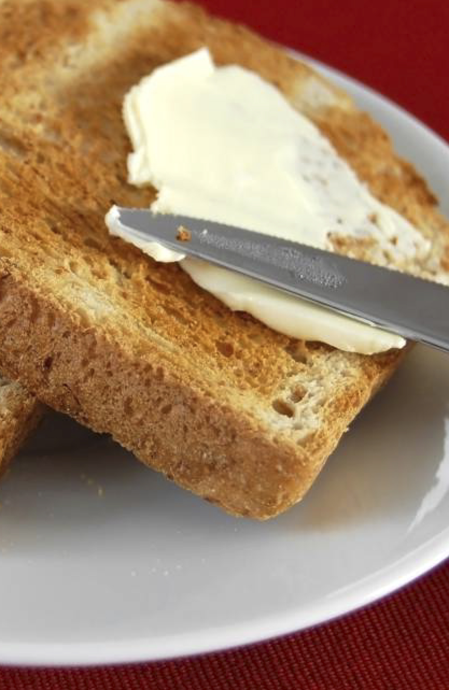

<div class="jumbotron">
  <h1 class="display-4">Tostadas</h1>
</div>


<div class="container-fluid">
  <div class="row justify-content-md-center">
      <div class="col-xs-6">
          <ul>
              <li><h4>Aceite</h4></li>
              <li><h4>Jamón serrano</h4></li>
              <li><h4>Jamón de York</h4></li>
              <li><h4>Mantequilla</h4></li>
              <li><h4>Mermelada de fresa</h4></li>
              <li><h4>Queso manchego</h4></li>
              <li><h4>Tomate</h4></li>
            </ul>
      </div>

      <div class="col-xs-6">
        
      </div>
    </div>
</div>